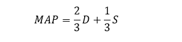
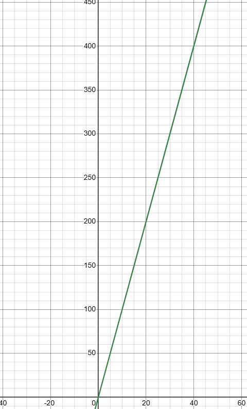

Differential Calculus
| Jump To Section:
| Functions
A function is a rule that matches inputs to outputs.
A given function f that takes input x is written as f(𝑥) (or "f of 𝑥").
But let's use a more tangible example - mean arterial pressure. If we know a patient's systolic (S) and diastolic (D) blood pressure, we calculate their MAP as follows:
This can be rewritten as a function like so:
(Note: we can replace "f" with anything; it's just an arbitrary label.)
Intuitively, if we change the inputs (S and D), we change the output (f(S, D)). But sometimes, we want to take a closer look at this relationship.
And to do that, we need to understand rates.
| Rates
A rate is a ratio between two quantities, explaining how they change with respect to one another.
For instance, if a drug is dosed at 10mg/kg, then for every 1kg increase in weight, we expect a 10mg increase in dose.
Constant rates (like the one above) produce straight lines:
To calculate the gradient of this line, we divide the height change ("rise") of any line segment by the corresponding horizontal change ("run").

As expected: 200 divided by 20 gives us our original value of 10mg/kg.
This is a simple concept, but it will be extremely important later.
Not least because of this next concept.
| Derivatives
Imagine we wanted the gradient of a single point in a function.
This gives us the instantaneous rate of change at that point, which can be extremely important. After all, a 10-second drop in O2 sats is very different to a 10-year one.
But a single point is exactly that: single.
How do we calculate the movement of a still point?
Mathematicians spent a long time trying to figure this out. And thankfully, we can copy their homework.
Using certain rules, we can find the "first derivative" of any function f(𝑥), written as f'(𝑥) ("f prime of 𝑥"). Then, for any input a, f'(a) gives us the single-point gradient at f(𝑥) at 𝑥 = a.
For our purposes, there are two relevant differentiation rules.
| The Power Rule
The power rule applies to any term in a function that contains the relevant variable (all constants should be discarded).
In English, it tells us to do the following:
- First, multiply each term by the exponent of its associated variable value (e.g. if the term is 𝑥2, multiply by 2)
- Then, subtract 1 from the exponent of each variable term (so 𝑥2 becomes 𝑥, 𝑥 becomes 1, etc).
This is easier than it sounds on paper.
For example, let's find the derivative of f(𝑥) = 𝑥2+5:

This is a simple example, but sometimes, things can be more complex. Here's another rule we can use:
| The Chain Rule
Sometimes, functions can contain other functions.
For example, imagine f(𝑥) = a(b(c(d(𝑥))))
At first, this looks like a headache to differentiate. But luckily, there's a pretty simple rule:
- Find the derivative of the first function
- Pass all the following functions as input to this derivative, and note this term down
- Repeat for the all remaining functions (e.g. for the second "layer", pass the third, fourth, fifth... functions as input to the derivative, and so on)
- Once you have all these terms, multiply them all together (like links in a chain; hence "chain rule")
So, for our example above:

This seems complex, but becomes intuitive with time.
For now, let's move on to partial derivatives.
| Partial Derivatives
Remember our mean arterial pressure function?
Notice how it had two variables: systolic and diastolic BP.
In all our differentiation examples so far, 𝑥 has been the only variable. How do we handle multiple at once?
Put simply: we don't.
In all past examples, we've been differentiating with respect to 𝑥.
This is the same as choosing 𝑥 for our "run" axis in our gradient calculation, or using "per kilogram bodyweight" when calculating a drug dosage.
And while we don't always need to use 𝑥, we can only choose one variable at a time.
So, when differentiating with respect to a certain variable in a multivariate equation, we treat the others as constants.
Let's use our MAP function for an example, by differentiating with respect to S:

Now that we've wrapped our head around this stuff, let's take a look at gradient descent.